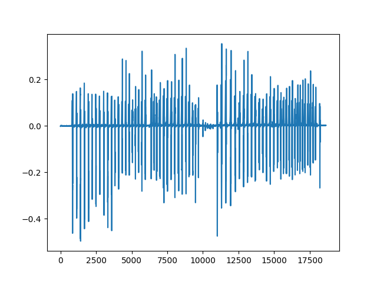

Note
Click here to download the full example code
Gait (steps) example¶
In this example, we use DiCoDiLe on an open dataset of gait (steps) IMU time-series to discover patterns in the data. We will then use those to attempt to detect steps and compare our findings with the ground truth.
import matplotlib.pyplot as plt
import numpy as np
from dicodile.data.gait import get_gait_data
from dicodile.utils.dictionary import init_dictionary
from dicodile.utils.viz import display_dictionaries
from dicodile.utils.csc import reconstruct
from dicodile import dicodile
Retrieve trial data¶
Out:
Downloading data from http://dev.ipol.im/~truong/GaitData.zip (192.3 MB)
file_sizes: 0%| | 0.00/202M [00:00<?, ?B/s]
file_sizes: 0%| | 24.6k/202M [00:00<24:45, 136kB/s]
file_sizes: 0%| | 49.2k/202M [00:00<24:45, 136kB/s]
file_sizes: 0%| | 106k/202M [00:00<15:23, 218kB/s]
file_sizes: 0%| | 221k/202M [00:00<08:47, 382kB/s]
file_sizes: 0%| | 451k/202M [00:00<04:47, 700kB/s]
file_sizes: 0%|1 | 909k/202M [00:01<02:31, 1.32MB/s]
file_sizes: 1%|2 | 1.83M/202M [00:01<01:18, 2.54MB/s]
file_sizes: 2%|4 | 3.66M/202M [00:01<00:40, 4.85MB/s]
file_sizes: 2%|5 | 4.19M/202M [00:01<00:46, 4.29MB/s]
file_sizes: 4%|9 | 7.07M/202M [00:02<00:32, 5.95MB/s]
file_sizes: 4%|#1 | 8.64M/202M [00:02<00:28, 6.66MB/s]
file_sizes: 6%|#5 | 11.3M/202M [00:02<00:27, 6.83MB/s]
file_sizes: 6%|#6 | 12.1M/202M [00:02<00:30, 6.29MB/s]
file_sizes: 6%|#7 | 13.1M/202M [00:02<00:30, 6.13MB/s]
file_sizes: 7%|#8 | 13.9M/202M [00:03<00:32, 5.70MB/s]
file_sizes: 7%|#9 | 14.9M/202M [00:03<00:32, 5.71MB/s]
file_sizes: 8%|##1 | 15.7M/202M [00:03<00:34, 5.37MB/s]
file_sizes: 8%|##2 | 16.8M/202M [00:03<00:33, 5.47MB/s]
file_sizes: 9%|##4 | 18.1M/202M [00:03<00:30, 5.92MB/s]
file_sizes: 9%|##5 | 18.9M/202M [00:04<00:33, 5.50MB/s]
file_sizes: 10%|##7 | 20.2M/202M [00:04<00:30, 5.96MB/s]
file_sizes: 10%|##8 | 21.0M/202M [00:04<00:32, 5.53MB/s]
file_sizes: 11%|##9 | 22.3M/202M [00:04<00:29, 5.98MB/s]
file_sizes: 11%|### | 23.1M/202M [00:04<00:32, 5.55MB/s]
file_sizes: 12%|###2 | 24.4M/202M [00:04<00:29, 6.00MB/s]
file_sizes: 12%|###3 | 25.2M/202M [00:05<00:31, 5.56MB/s]
file_sizes: 13%|###5 | 26.5M/202M [00:05<00:29, 6.02MB/s]
file_sizes: 14%|###6 | 27.3M/202M [00:05<00:31, 5.57MB/s]
file_sizes: 14%|###8 | 28.7M/202M [00:05<00:27, 6.22MB/s]
file_sizes: 15%|###9 | 29.7M/202M [00:05<00:28, 6.10MB/s]
file_sizes: 15%|####1 | 30.8M/202M [00:06<00:28, 6.02MB/s]
file_sizes: 16%|####2 | 32.0M/202M [00:06<00:27, 6.15MB/s]
file_sizes: 16%|####4 | 33.0M/202M [00:06<00:27, 6.05MB/s]
file_sizes: 17%|####5 | 34.2M/202M [00:06<00:27, 6.17MB/s]
file_sizes: 17%|####6 | 34.9M/202M [00:06<00:31, 5.29MB/s]
file_sizes: 18%|####9 | 36.7M/202M [00:06<00:24, 6.66MB/s]
file_sizes: 19%|##### | 37.5M/202M [00:07<00:27, 5.98MB/s]
file_sizes: 19%|#####1 | 38.1M/202M [00:07<00:30, 5.30MB/s]
file_sizes: 19%|#####1 | 38.8M/202M [00:07<00:33, 4.83MB/s]
file_sizes: 19%|#####2 | 39.3M/202M [00:07<00:37, 4.33MB/s]
file_sizes: 20%|#####3 | 40.2M/202M [00:07<00:35, 4.54MB/s]
file_sizes: 20%|#####4 | 40.9M/202M [00:07<00:33, 4.85MB/s]
file_sizes: 21%|#####6 | 41.9M/202M [00:08<00:35, 4.54MB/s]
file_sizes: 21%|#####7 | 42.9M/202M [00:08<00:33, 4.68MB/s]
file_sizes: 22%|#####8 | 43.5M/202M [00:08<00:35, 4.41MB/s]
file_sizes: 22%|#####9 | 44.4M/202M [00:08<00:34, 4.60MB/s]
file_sizes: 22%|###### | 45.3M/202M [00:08<00:33, 4.73MB/s]
file_sizes: 23%|######1 | 46.3M/202M [00:09<00:32, 4.82MB/s]
file_sizes: 24%|######3 | 47.4M/202M [00:09<00:29, 5.21MB/s]
file_sizes: 24%|######4 | 48.2M/202M [00:09<00:30, 4.96MB/s]
file_sizes: 24%|######5 | 49.0M/202M [00:09<00:31, 4.85MB/s]
file_sizes: 25%|######7 | 50.1M/202M [00:09<00:30, 5.05MB/s]
file_sizes: 25%|######8 | 50.8M/202M [00:09<00:30, 4.92MB/s]
file_sizes: 26%|######9 | 51.6M/202M [00:10<00:27, 5.43MB/s]
file_sizes: 26%|####### | 52.7M/202M [00:10<00:30, 4.88MB/s]
file_sizes: 27%|#######1 | 53.6M/202M [00:10<00:30, 4.93MB/s]
file_sizes: 27%|#######2 | 54.5M/202M [00:10<00:29, 4.97MB/s]
file_sizes: 27%|#######4 | 55.4M/202M [00:10<00:29, 5.00MB/s]
file_sizes: 28%|#######5 | 56.4M/202M [00:11<00:28, 5.02MB/s]
file_sizes: 29%|#######7 | 57.5M/202M [00:11<00:26, 5.42MB/s]
file_sizes: 29%|#######8 | 58.3M/202M [00:11<00:27, 5.12MB/s]
file_sizes: 29%|#######9 | 59.2M/202M [00:11<00:27, 5.11MB/s]
file_sizes: 30%|######## | 60.2M/202M [00:11<00:27, 5.10MB/s]
file_sizes: 30%|########2 | 61.3M/202M [00:11<00:25, 5.48MB/s]
file_sizes: 31%|########3 | 62.1M/202M [00:12<00:27, 5.16MB/s]
file_sizes: 31%|########4 | 63.0M/202M [00:12<00:26, 5.14MB/s]
file_sizes: 32%|########5 | 64.0M/202M [00:12<00:23, 5.83MB/s]
file_sizes: 32%|########7 | 65.0M/202M [00:12<00:26, 5.12MB/s]
file_sizes: 33%|########8 | 65.9M/202M [00:12<00:26, 5.11MB/s]
file_sizes: 33%|########9 | 66.8M/202M [00:13<00:26, 5.10MB/s]
file_sizes: 34%|#########1 | 68.0M/202M [00:13<00:24, 5.48MB/s]
file_sizes: 34%|#########2 | 68.9M/202M [00:13<00:24, 5.36MB/s]
file_sizes: 35%|#########3 | 69.7M/202M [00:13<00:25, 5.08MB/s]
file_sizes: 35%|#########4 | 70.9M/202M [00:13<00:23, 5.47MB/s]
file_sizes: 36%|#########5 | 71.7M/202M [00:13<00:25, 5.16MB/s]
file_sizes: 36%|#########7 | 72.9M/202M [00:14<00:23, 5.48MB/s]
file_sizes: 37%|#########8 | 73.9M/202M [00:14<00:23, 5.53MB/s]
file_sizes: 37%|########## | 74.7M/202M [00:14<00:24, 5.26MB/s]
file_sizes: 37%|##########1 | 75.5M/202M [00:14<00:25, 5.01MB/s]
file_sizes: 38%|##########2 | 76.7M/202M [00:14<00:23, 5.38MB/s]
file_sizes: 38%|##########3 | 77.5M/202M [00:15<00:24, 5.14MB/s]
file_sizes: 39%|##########5 | 78.6M/202M [00:15<00:22, 5.46MB/s]
file_sizes: 40%|##########6 | 79.7M/202M [00:15<00:22, 5.48MB/s]
file_sizes: 40%|##########7 | 80.5M/202M [00:15<00:22, 5.27MB/s]
file_sizes: 40%|##########9 | 81.6M/202M [00:15<00:21, 5.49MB/s]
file_sizes: 41%|########### | 82.3M/202M [00:15<00:23, 5.09MB/s]
file_sizes: 41%|###########1 | 83.4M/202M [00:16<00:22, 5.29MB/s]
file_sizes: 42%|###########3 | 84.5M/202M [00:16<00:21, 5.50MB/s]
file_sizes: 42%|###########4 | 85.2M/202M [00:16<00:22, 5.08MB/s]
file_sizes: 43%|###########5 | 86.1M/202M [00:16<00:22, 5.07MB/s]
file_sizes: 43%|###########6 | 87.0M/202M [00:16<00:22, 5.07MB/s]
file_sizes: 44%|###########8 | 88.2M/202M [00:17<00:20, 5.46MB/s]
file_sizes: 44%|###########9 | 89.3M/202M [00:17<00:20, 5.53MB/s]
file_sizes: 45%|############ | 90.3M/202M [00:17<00:19, 5.59MB/s]
file_sizes: 45%|############2 | 91.3M/202M [00:17<00:19, 5.55MB/s]
file_sizes: 46%|############3 | 92.1M/202M [00:17<00:20, 5.27MB/s]
file_sizes: 46%|############4 | 93.2M/202M [00:17<00:20, 5.41MB/s]
file_sizes: 47%|############6 | 94.2M/202M [00:18<00:19, 5.51MB/s]
file_sizes: 47%|############7 | 95.3M/202M [00:18<00:19, 5.58MB/s]
file_sizes: 48%|############8 | 96.3M/202M [00:18<00:18, 5.63MB/s]
file_sizes: 48%|############# | 97.4M/202M [00:18<00:18, 5.66MB/s]
file_sizes: 49%|#############1 | 98.4M/202M [00:18<00:18, 5.69MB/s]
file_sizes: 49%|#############2 | 99.2M/202M [00:19<00:19, 5.35MB/s]
file_sizes: 50%|#############9 | 100M/202M [00:19<00:17, 5.67MB/s]
file_sizes: 50%|############## | 101M/202M [00:19<00:17, 5.65MB/s]
file_sizes: 51%|##############1 | 102M/202M [00:19<00:18, 5.35MB/s]
file_sizes: 51%|##############4 | 104M/202M [00:19<00:15, 6.21MB/s]
file_sizes: 52%|##############5 | 105M/202M [00:19<00:15, 6.09MB/s]
file_sizes: 52%|##############6 | 106M/202M [00:20<00:17, 5.62MB/s]
file_sizes: 53%|##############8 | 107M/202M [00:20<00:15, 6.07MB/s]
file_sizes: 53%|##############9 | 108M/202M [00:20<00:16, 5.66MB/s]
file_sizes: 54%|###############1 | 109M/202M [00:20<00:14, 6.43MB/s]
file_sizes: 55%|###############2 | 110M/202M [00:20<00:15, 5.91MB/s]
file_sizes: 55%|###############5 | 112M/202M [00:21<00:13, 6.62MB/s]
file_sizes: 56%|###############6 | 112M/202M [00:21<00:14, 6.06MB/s]
file_sizes: 57%|###############8 | 114M/202M [00:21<00:13, 6.73MB/s]
file_sizes: 57%|###############9 | 115M/202M [00:21<00:14, 6.14MB/s]
file_sizes: 58%|################1 | 116M/202M [00:21<00:12, 6.77MB/s]
file_sizes: 58%|################3 | 118M/202M [00:21<00:12, 6.90MB/s]
file_sizes: 59%|################5 | 119M/202M [00:22<00:11, 6.99MB/s]
file_sizes: 60%|################6 | 120M/202M [00:22<00:12, 6.70MB/s]
file_sizes: 60%|################8 | 122M/202M [00:22<00:11, 7.23MB/s]
file_sizes: 61%|################# | 123M/202M [00:22<00:10, 7.25MB/s]
file_sizes: 62%|#################2 | 124M/202M [00:22<00:10, 7.26MB/s]
file_sizes: 62%|#################4 | 126M/202M [00:23<00:10, 7.27MB/s]
file_sizes: 63%|#################6 | 127M/202M [00:23<00:10, 7.31MB/s]
file_sizes: 64%|#################8 | 128M/202M [00:23<00:09, 7.67MB/s]
file_sizes: 64%|################## | 130M/202M [00:23<00:09, 7.62MB/s]
file_sizes: 65%|##################2 | 131M/202M [00:23<00:08, 7.90MB/s]
file_sizes: 66%|##################4 | 133M/202M [00:23<00:08, 8.12MB/s]
file_sizes: 67%|##################7 | 135M/202M [00:24<00:07, 8.66MB/s]
file_sizes: 67%|##################8 | 136M/202M [00:24<00:07, 8.33MB/s]
file_sizes: 69%|###################1 | 138M/202M [00:24<00:06, 9.14MB/s]
file_sizes: 69%|###################3 | 139M/202M [00:24<00:07, 8.67MB/s]
file_sizes: 70%|###################6 | 141M/202M [00:24<00:06, 9.07MB/s]
file_sizes: 71%|###################8 | 143M/202M [00:25<00:06, 9.37MB/s]
file_sizes: 71%|#################### | 144M/202M [00:25<00:07, 8.14MB/s]
file_sizes: 73%|####################3 | 147M/202M [00:25<00:05, 9.98MB/s]
file_sizes: 73%|####################5 | 148M/202M [00:25<00:06, 8.86MB/s]
file_sizes: 74%|####################7 | 149M/202M [00:25<00:06, 8.37MB/s]
file_sizes: 74%|####################8 | 150M/202M [00:25<00:06, 7.64MB/s]
file_sizes: 75%|##################### | 152M/202M [00:26<00:06, 7.71MB/s]
file_sizes: 76%|#####################2 | 153M/202M [00:26<00:08, 5.83MB/s]
file_sizes: 77%|#####################6 | 156M/202M [00:26<00:05, 8.15MB/s]
file_sizes: 78%|#####################8 | 157M/202M [00:26<00:05, 7.80MB/s]
file_sizes: 78%|#####################9 | 158M/202M [00:27<00:05, 7.24MB/s]
file_sizes: 79%|###################### | 159M/202M [00:27<00:06, 6.70MB/s]
file_sizes: 79%|######################2 | 160M/202M [00:27<00:06, 6.27MB/s]
file_sizes: 80%|######################3 | 161M/202M [00:27<00:07, 5.64MB/s]
file_sizes: 80%|######################4 | 162M/202M [00:27<00:07, 5.69MB/s]
file_sizes: 81%|######################5 | 163M/202M [00:27<00:06, 6.14MB/s]
file_sizes: 81%|######################7 | 164M/202M [00:28<00:06, 5.80MB/s]
file_sizes: 82%|######################8 | 165M/202M [00:28<00:06, 5.61MB/s]
file_sizes: 82%|####################### | 166M/202M [00:28<00:05, 6.25MB/s]
file_sizes: 83%|#######################2 | 167M/202M [00:28<00:05, 6.16MB/s]
file_sizes: 84%|#######################4 | 169M/202M [00:28<00:05, 6.40MB/s]
file_sizes: 84%|#######################5 | 169M/202M [00:29<00:05, 5.85MB/s]
file_sizes: 85%|#######################7 | 171M/202M [00:29<00:04, 6.43MB/s]
file_sizes: 85%|#######################8 | 172M/202M [00:29<00:04, 6.55MB/s]
file_sizes: 86%|######################## | 173M/202M [00:29<00:04, 6.38MB/s]
file_sizes: 86%|########################1 | 174M/202M [00:29<00:04, 5.90MB/s]
file_sizes: 87%|########################3 | 176M/202M [00:29<00:03, 6.59MB/s]
file_sizes: 88%|########################5 | 177M/202M [00:30<00:04, 6.01MB/s]
file_sizes: 88%|########################7 | 178M/202M [00:30<00:03, 6.72MB/s]
file_sizes: 89%|########################8 | 179M/202M [00:30<00:03, 6.04MB/s]
file_sizes: 89%|########################9 | 180M/202M [00:30<00:04, 5.36MB/s]
file_sizes: 89%|######################### | 180M/202M [00:30<00:04, 4.92MB/s]
file_sizes: 90%|######################### | 181M/202M [00:30<00:04, 4.94MB/s]
file_sizes: 90%|#########################2 | 182M/202M [00:31<00:04, 4.61MB/s]
file_sizes: 91%|#########################3 | 183M/202M [00:31<00:04, 4.72MB/s]
file_sizes: 91%|#########################4 | 184M/202M [00:31<00:03, 4.81MB/s]
file_sizes: 92%|#########################6 | 185M/202M [00:31<00:03, 4.88MB/s]
file_sizes: 92%|#########################7 | 185M/202M [00:31<00:03, 4.77MB/s]
file_sizes: 92%|#########################8 | 187M/202M [00:32<00:02, 5.17MB/s]
file_sizes: 93%|########################## | 187M/202M [00:32<00:02, 4.99MB/s]
file_sizes: 93%|##########################1 | 188M/202M [00:32<00:02, 5.20MB/s]
file_sizes: 94%|##########################2 | 189M/202M [00:32<00:02, 5.32MB/s]
file_sizes: 94%|##########################4 | 190M/202M [00:32<00:02, 5.09MB/s]
file_sizes: 95%|##########################5 | 191M/202M [00:33<00:02, 4.93MB/s]
file_sizes: 95%|##########################6 | 192M/202M [00:33<00:01, 5.32MB/s]
file_sizes: 96%|##########################8 | 193M/202M [00:33<00:01, 5.38MB/s]
file_sizes: 96%|##########################9 | 194M/202M [00:33<00:01, 5.18MB/s]
file_sizes: 97%|########################### | 195M/202M [00:33<00:01, 5.34MB/s]
file_sizes: 97%|###########################1| 196M/202M [00:33<00:01, 5.10MB/s]
file_sizes: 98%|###########################3| 197M/202M [00:34<00:00, 5.71MB/s]
file_sizes: 98%|###########################4| 198M/202M [00:34<00:00, 5.47MB/s]
file_sizes: 99%|###########################6| 199M/202M [00:34<00:00, 5.49MB/s]
file_sizes: 99%|###########################7| 200M/202M [00:34<00:00, 5.28MB/s]
file_sizes: 100%|###########################8| 201M/202M [00:34<00:00, 5.40MB/s]
file_sizes: 100%|############################| 202M/202M [00:34<00:00, 5.78MB/s]
Successfully downloaded file to /github/home/data/dicodile/gait/GaitData.zip
Let’s have a look at the data for one trial.
trial.keys()
Out:
dict_keys(['Subject', 'Trial', 'Code', 'Age', 'Gender', 'Height', 'Weight', 'BMI', 'Laterality', 'Sensor', 'WalkedDistance', 'WalkingSpeed', 'PathologyGroup', 'IsControl', 'LeftFootActivity', 'RightFootActivity', 'data'])
We get a dictionary whose keys are metadata items, plus a ‘data’ key that contains a numpy array with the trial time series for each sensor axis, at 100 Hz resolution.
Out:
[<matplotlib.lines.Line2D object at 0x7f13ba83f1f0>]
Let’s look at a small portion of the series for both feet, overlaid on the same plot
fig, ax = plt.subplots()
ax.plot(trial['data']['LAV'][5000:5800],
label='left foot vertical acceleration')
ax.plot(trial['data']['RAV'][5000:5800],
label='right foot vertical acceleration')
ax.set_xlabel('time (x10ms)')
ax.set_ylabel('acceleration ($m.s^{-2}$)')
ax.legend()
Out:
<matplotlib.legend.Legend object at 0x7f13ba951850>
We can see the alternating left and right foot movements.
In the rest of this example, we will only use the right foot vertical acceleration.
Convolutional Dictionary Learning¶
Now, let’s use DiCoDiLe to learn patterns from the data and reconstruct the signal from a sparse representation.
First, we initialize a dictionary from parts of the signal:
Out:
(1, 18639)
Note the use of reshape to shape the signal as per dicodile
requirements: the shape of the signal should be
(n_channels, *sig_support).
Here, we have a single-channel time series so it is (1, n_times).
Then, we run DiCoDiLe!
Out:
[DEBUG:DICODILE] Lambda_max = 1.7133212673372127
/github/workspace/dicodile/workers/reusable_workers.py:50: UserWarning: You should not require different size
warnings.warn("You should not require different size")
Started 4 workers in 2.39s
[INFO:DICODILE] - CD iterations 0 / 3 (0s)
[DEBUG:DICODILE] lambda = 1.713e-01
[INFO:DICOD-4] converged in 1.756s (1.127s) with 24710 iterations (10065 updates).
[DEBUG:DICODILE] Objective (z) : 1.446e+01 (2s)
[INFO:Update D]: 4 iterations
[DEBUG:DICODILE] Objective (d) : 1.403e+01 (1s)
[INFO:DICODILE] - CD iterations 1 / 3 (3s)
[DEBUG:DICODILE] lambda = 1.713e-01
[INFO:DICOD-4] converged in 1.084s (0.655s) with 23821 iterations (4681 updates).
[DEBUG:DICODILE] Objective (z) : 1.377e+01 (1s)
[INFO:Update D]: 4 iterations
[DEBUG:DICODILE] Objective (d) : 1.375e+01 (1s)
[INFO:DICODILE] - CD iterations 2 / 3 (6s)
[DEBUG:DICODILE] lambda = 1.713e-01
[INFO:DICOD-4] converged in 1.000s (0.594s) with 19851 iterations (4909 updates).
[DEBUG:DICODILE] Objective (z) : 1.359e+01 (1s)
[INFO:Update D]: 3 iterations
[DEBUG:DICODILE] Objective (d) : 1.356e+01 (1s)
[INFO:DICOD-4] converged in 0.644s (0.387s) with 9177 iterations (3368 updates).
[INFO:DICODILE] Finished in 8s
[DiCoDiLe] final cost : [37.92317851302482, 14.463179607230963, 14.028313158084831, 13.770804610610902, 13.749402627747621, 13.594938775336225, 13.563815559347816, 13.487752206082469]
We can order the dictionary patches by decreasing sum of the activations’
absolute values in the activations z_hat, which, intuitively, gives
a measure of how they contribute to the reconstruction.
sum_abs_val = np.sum(np.abs(z_hat), axis=-1)
# we negate sum_abs_val to sort in decreasing order
patch_indices = np.argsort(-sum_abs_val)
fig_reordered = display_dictionaries(D_init[patch_indices],
D_hat[patch_indices])
Signal reconstruction¶
Now, let’s reconstruct the original signal
Plot a small part of the original and reconstructed signals
fig_hat, ax_hat = plt.subplots()
ax_hat.plot(X[0][5000:5800],
label='right foot vertical acceleration (ORIGINAL)')
ax_hat.plot(X_hat[0][5000:5800],
label='right foot vertical acceleration (RECONSTRUCTED)')
ax_hat.set_xlabel('time (x10ms)')
ax_hat.set_ylabel('acceleration ($m.s^{-2}$)')
ax_hat.legend()

Out:
<matplotlib.legend.Legend object at 0x7f13ac6962e0>
Check that our representation is indeed sparse:
Out:
583
Besides our visual check, a measure of how closely we’re reconstructing the original signal is the (normalized) cross-correlation. Let’s compute this:
np.correlate(X[0], X_hat[0]) / (
np.sqrt(np.correlate(X[0], X[0]) * np.correlate(X_hat[0], X_hat[0])))
Out:
array([0.97639762])
Multichannel signals¶
DiCoDiLe works just as well with multi-channel signals. The gait dataset contains 16 signals (8 for each foot), in the rest of this tutorial, we’ll use three of those.
# Left foot Vertical acceleration, Y rotation and X acceleration
channels = ['LAV', 'LRY', 'LAX']
Let’s look at a small portion of multi-channel data
colors = plt.rcParams["axes.prop_cycle"]()
mc_fig, mc_ax = plt.subplots(len(channels), sharex=True)
for ax, chan in zip(mc_ax, channels):
ax.plot(trial['data'][chan][5000:5800],
label=chan, color=next(colors)["color"])
mc_fig.legend(loc="upper center")
Out:
<matplotlib.legend.Legend object at 0x7f13ac60c7f0>
Let’s put the data in shape for DiCoDiLe: (n_channels, n_times)
X_mc_subset = trial['data'][channels].to_numpy().T
print(X_mc_subset.shape)
Out:
(3, 18639)
Initialize the dictionary (note that the call is identical to the single-channel version)
D_init_mc = init_dictionary(X_mc_subset,
n_atoms=8,
atom_support=(200,),
random_state=60)
And run DiCoDiLe (note that the call is identical to the single-channel version here as well)
Out:
[DEBUG:DICODILE] Lambda_max = 903.7323963288766
[INFO:DICODILE] - CD iterations 0 / 3 (0s)
[DEBUG:DICODILE] lambda = 9.037e+01
[INFO:DICOD-4] converged in 1.964s (1.289s) with 25969 iterations (12114 updates).
[DEBUG:DICODILE] Objective (z) : 5.744e+06 (2s)
[PROGRESS:Update D] 1s - 1.00% iterations (1.587e-07)
[PROGRESS:Update D] 1s - 2.00% iterations (1.587e-07)
[PROGRESS:Update D] 1s - 3.00% iterations (1.587e-07)
[PROGRESS:Update D] 1s - 4.00% iterations (7.923e-08)
[INFO:Update D]: 5 iterations
[DEBUG:DICODILE] Objective (d) : 5.553e+06 (2s)
[INFO:DICODILE] - CD iterations 1 / 3 (5s)
[DEBUG:DICODILE] lambda = 9.037e+01
[INFO:DICOD-4] converged in 1.344s (0.823s) with 22128 iterations (6877 updates).
[DEBUG:DICODILE] Objective (z) : 5.484e+06 (2s)
[PROGRESS:Update D] 1s - 1.00% iterations (1.558e-07)
[PROGRESS:Update D] 1s - 2.00% iterations (1.635e-08)
[INFO:Update D]: 3 iterations
[DEBUG:DICODILE] Objective (d) : 5.481e+06 (2s)
[INFO:DICODILE] - CD iterations 2 / 3 (9s)
[DEBUG:DICODILE] lambda = 9.037e+01
[INFO:DICOD-4] converged in 0.772s (0.468s) with 11258 iterations (3944 updates).
[DEBUG:DICODILE] Objective (z) : 5.469e+06 (1s)
[PROGRESS:Update D] 1s - 1.00% iterations (3.936e-08)
[INFO:Update D]: 2 iterations
[DEBUG:DICODILE] Objective (d) : 5.469e+06 (2s)
[INFO:DICOD-4] converged in 0.288s (0.128s) with 4440 iterations (1106 updates).
[INFO:DICODILE] Finished in 11s
[DiCoDiLe] final cost : [20304139.366815556, 5744078.289462161, 5553424.701327064, 5483895.250569357, 5481251.341930408, 5469488.37810867, 5469160.998571945, 5468330.794284996]
Signal reconstruction (multichannel)¶
Now, let’s reconstruct the original signal
X_hat_mc = reconstruct(z_hat_mc, D_hat_mc)
X_hat_mc.shape
Out:
(3, 18639)
Let’s visually compare a small part of the original and reconstructed signals along with the activations.
viz_start_idx = 4000
viz_end_idx = 5800
viz_chan = 2
max_abs = np.max(np.abs(z_hat_mc), axis=-1)
max_abs = max_abs.reshape(z_hat_mc.shape[0], 1)
z_hat_normalized = z_hat_mc / max_abs
fig_hat_mc, ax_hat_mc = plt.subplots(2, figsize=(12, 8))
ax_hat_mc[0].plot(X_mc_subset[viz_chan][viz_start_idx:viz_end_idx],
label='ORIGINAL')
ax_hat_mc[0].plot(X_hat_mc[viz_chan][viz_start_idx:viz_end_idx],
label='RECONSTRUCTED')
for idx in range(z_hat_normalized.shape[0]):
ax_hat_mc[1].stem(z_hat_normalized[idx][viz_start_idx:viz_end_idx],
linefmt=f"C{idx}-",
markerfmt=f"C{idx}o")
ax_hat_mc[0].set_xlabel('time (x10ms)')
ax_hat_mc[0].legend()
Out:
<matplotlib.legend.Legend object at 0x7f13aaca39d0>
Total running time of the script: ( 1 minutes 10.711 seconds)